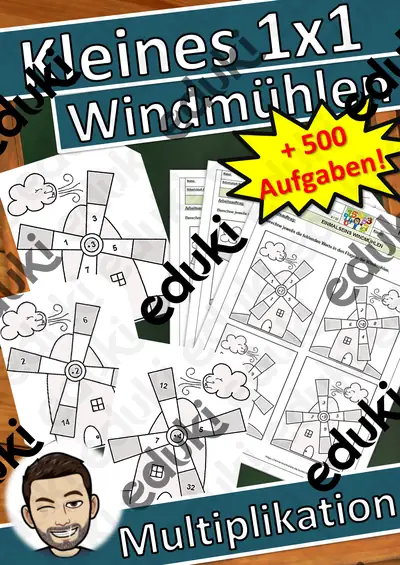

Einmaleins Schiffe versenken - (auch Homeschooling)
Mit diesem Material erhalten Sie das Einmaleins Schiffe versenken Spiel zum üben des Grundwissens Kopfrechnen in der Grunschule. Auch perfekt geignet zum Homeschooling. Gespielt wird das Spiel nach den üblichen Regeln. Die Spieler, der an der Reihe zum schießen ist, nennt zuerst die Zahl in der oberen/waagrechten Reihe mal der Zahl in der unteren/senkrechten Reihe. Anschließend nennt er das Ergebnis der Multiplikation und gibt so den Schuss frei!
Die Spielfelder können kopiert, oder im Sinne der Nachhaltigkeit auch ausgedruckt und laminiert werden, und so immer wieder neu genutzt werden.
FachFachübergreifendes
KlasseKl. 3–5
SchulformGrundschule
MaterialartUnterrichtsreihen, Arbeitsblätter, Stationenlernen, Spiele
Ähnliche Materialien

Schiffe versenken Lückentext mit Wortspeicher Hörverstehen und Suchsel

Einmaleins-Malen nach Ergebnis Winter – Pinguin, Schneemann, Eule, 3-fach differenziert mit Selbstkontrolle (Klasse 2/3)

Einmaleins Spiel (kleines Einmaleins)

Homeschooling Bilder-Einmaleins (kleines Einmaleins) (auch Homeschooling)

Einmaleins Materialpaket Spiele (auch Homeschooling) (kleines Einmaleins)

Übungsheft Multiplikation Übungsheft (auch Homeschooling)

Schiff Lückentext mit Wortspeicher Hörverstehen und Suchsel
